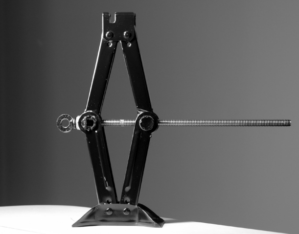

: Índex: `cargols '¶
Un cargol és una màquina senzilla formada per un pla inclinat que s’inscriu al voltant d’un eix cilíndric.

Cargol i femella hexagonal.¶
Parts d’un cargol¶
La denominació de les diferents parts del cargol és la següent.
- Tija
- El tros cilíndric del cargol on estan tallats els rugits del fil.
- Coll
- Part de la tija de cargol desconeguda.
- Fil
- És el pla inclinat inscrit en forma helicoïdal al voltant de la tija.
- Cargol
- És la part extrema del cargol, que s’utilitza per girar el fil. Normalment és quadrat o hexagonal en cargols grans.
- Filial
- És la part sortint de la ranura del fil.
- Aprovada
- És la distància entre dues crestes consecutives del fil.
- Nou
- És una peça mecànica amb un forat roscat que s’uneix al cargol. La femella sol tenir una forma quadrada o hexagonal per facilitar el seu gir a través de les claus d’ajustament.

Parts d’un cargol i femella hexagonal.¶
Aplicacions de cargol¶
- Unions desmuntables
Una de les aplicacions dels cargols és fer articulacions extraïbles.
Per exemple, una carcassa d’ordinador està enllaçada amb cargols.
- Mecanismes que avancen amb precisió
Els cargols permeten moviments de precisió.
Per exemple, un cargol de l’aixeta rotativa permet obrir el pas de l’aigua amb una gran precisió. Un altre exemple són les cadires de cargol que es poden pujar o baixar amb cercle de precisió.
- Mecanismes per moure’s amb la força
Una altra gran aplicació de cargols és crear mecanismes que avancin amb molta força ** **.
Per exemple, el mecanisme d’un gat mecànic per aixecar els cotxes es basa en un cargol que mou les tisores.

Cat mecànic per aixecar els cotxes, amb un cargol que mou el mecanisme.¶
Interiot, domini públic, a través de Wikimedia Commons.
{kind=link}
Càlcul de cargol¶
Els paràmetres d’un cargol són el seu ** pas ** o la distància entre dos filets, el nombre de girs de ** gir ** i l’avanç lineal ** ** que s’aconsegueix en girar. La fórmula que relaciona aquestes variables és la següent.
Ésser
Progrés = distància lineal que recorre el cargol en mil·límetres
Giro = nombre de girs que gira el cargol
Pas = distància que avança el cargol per cada retorn que gira
Tant el ** Advance ** com el ** pas ** s’han d’expressar a les mateixes unitats de distància, normalment mil·límetres.
Exercici de la cadira¶
Una cadira de taller s’aixeca amb un cargol amb un fil igual a 4 mil·límetres per volta. Si volem augmentar la cadira 6 centímetres, quantes voltes serà necessari donar el cargol?
Per solucionar el problema, primer escrivim les dades que tenim, convertint totes les distàncies a la mateixa unitat.
A continuació, escrivim la fórmula i substituïm les quantitats conegudes.
Finalment, esborrem el desconegut de trobar el resultat.
Exercici de cargol bancari¶
Un cargol bancari obre una distància de 12 centímetres després de girar la manivela un total de 24 voltes. Quin és el pas del cargol?
Per solucionar el problema, primer escrivim les dades que tenim, convertint totes les distàncies a la mateixa unitat.
A continuació, escrivim la fórmula i substituïm les quantitats conegudes.
Finalment, esborrem el desconegut de trobar el resultat.
Exercici de cargol del microscopi¶
Un microscopi té un cargol per aixecar i baixar el pla i centrar correctament l’objecte a visualitzar. Si el pas del cargol és de 0,5 mil·límetres i fem un gir de 16 anys, quant avançaran les plaques?
Per solucionar el problema, primer escrivim les dades que tenim, convertint totes les distàncies a la mateixa unitat.
A continuació, escrivim la fórmula i substituïm les quantitats conegudes.
Finalment, no cal esborrar i podem calcular directament el resultat.